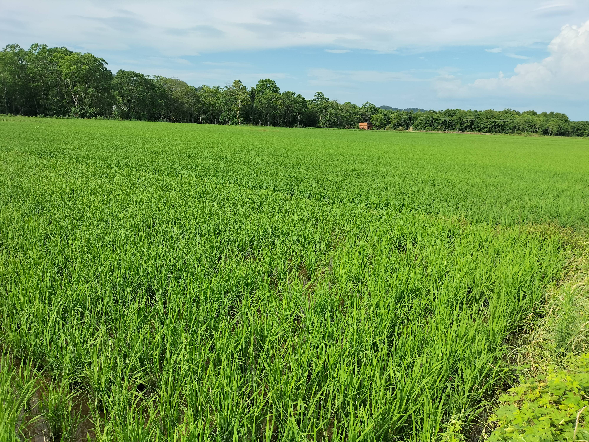
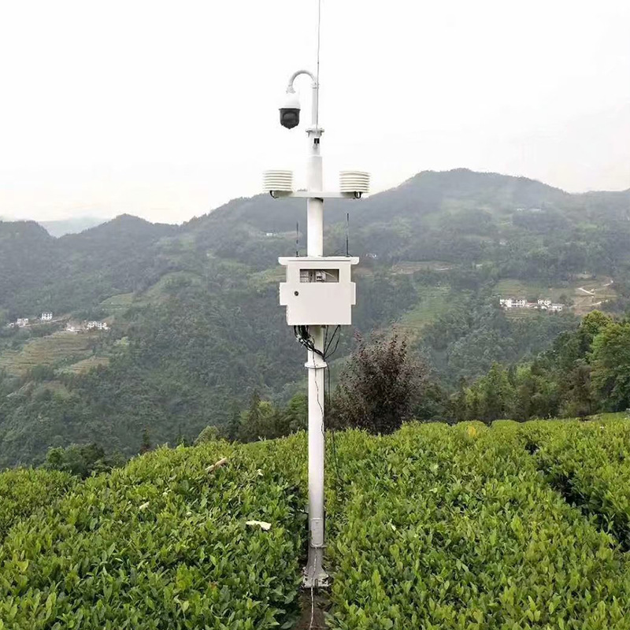
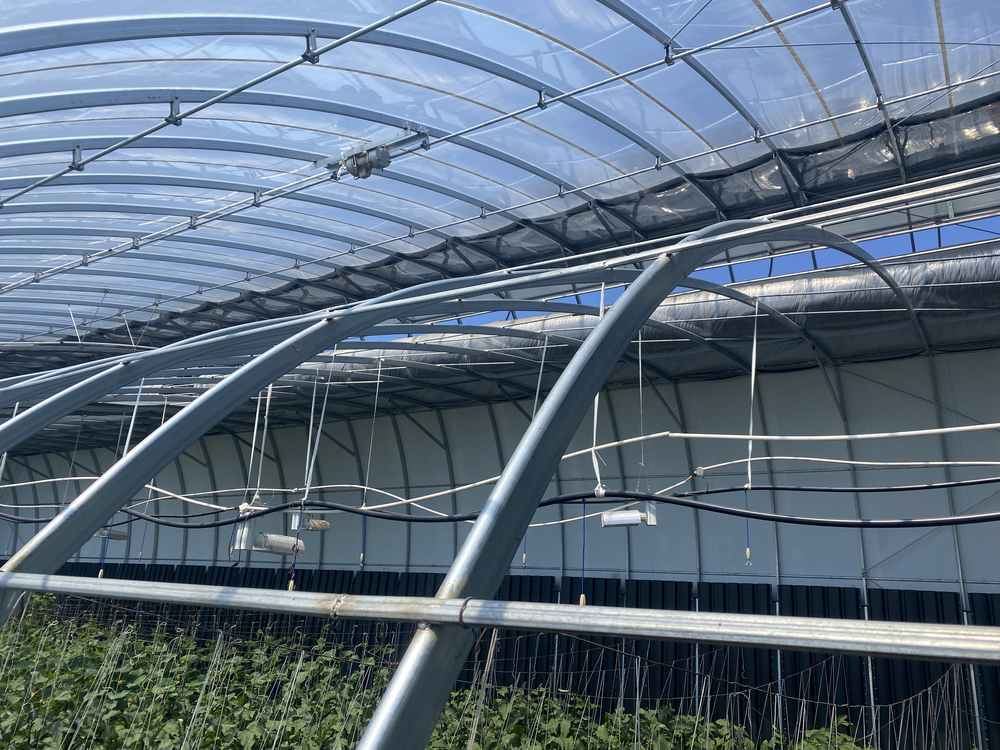

核心功能
实时监测
24小时不间断监测农田害虫情况，及时发现潜在威胁。
- 高清图像采集
- 智能运动检测
- 夜视功能
AI识别
先进的AI算法，准确识别多种农作物害虫。
- 深度学习算法
- 多种害虫识别
- 持续学习优化
智能预警
基于大数据分析，提前预测病虫害爆发风险。
- 多级预警机制
- 实时通知推送
- 预警等级划分
技术优势
深度学习算法
采用最新的深度学习技术，识别准确率高达99%
大数据分析
基于海量数据的智能分析，提供精准预测
云端处理
强大的云计算能力，实现快速响应
智能硬件
高性能处理器，支持边缘计算
应用场景

大田作物
适用于水稻、小麦等大田作物的病虫害监测

果园监测
针对果树病虫害的专业监测方案

温室大棚
适合设施农业的智能监测系统